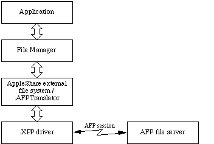
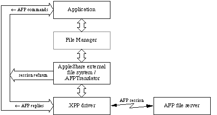

|
|
This Technical Note shows how to borrow the session reference number of an AFP
volume mounted by the Macintosh File System. It also shows how to retrieve
other information from the file system for a mounted AFP volume.
This Technote has been updated. If you are using AppleShare Client 3.7 and later check out TN1106.html.
Technote NW 16 is still valid for those using earlier versions of the AppleShare
Client.
[Sep 01 1992]
|
Introduction
The AppleShare Chooser extension allows Macintosh applications to perform
almost all volume and file access operations on an AppleTalk Filing Protocol
(AFP) file server by translating File Manager commands to their AFP equivalent
commands. To access a file server, an application normally calls the File
Manager. The File Manager calls the AppleShare external file system (part of
the AppleShare Chooser extension) which translates the File Manager command
into an AFP call. The AppleShare external file system then calls the .XPP
driver. The .XPP driver delivers the AFP call to the server and returns the
reply to the AppleShare external file system. The AppleShare external file
system translates the reply data (if any) and returns it to the File Manager
which returns it to the application. Figure 1 shows the normal flow of commands
between a Macintosh application and an AFP file server.

Figure 1. Application Using the File Server Through the File Manager
However, there are a few instances for which no equivalent File Manager
commands exist to perform operations supported by AFP. In those instances, an
application must use the .XPP driver to access the file server with AFP
commands.
Applications accessing a file server with AFP commands need to have an open AFP
session with the file server. When no session exists, the application must use
the .XPP driver to open an AFP session with the afpLogin (and possibly
afpLoginCont) command. However, when an AFP volume on the file server
is already mounted by the Macintosh File System, a session is already open with
the file server. If the session reference number is retrieved from the
.AFPTranslator driver (another part of the AppleShare Chooser extension), that
session can be used, with restrictions, to access the file server with
AFP commands. Figure 2 shows the flow of commands when a Macintosh application
accesses an AFP file server directly through the .XPP driver using the session
reference number borrowed from the .AFPTranslator driver.

Figure 2.Application Using File Server Through the .XPP Driver with Borrowed Session Reference Number
The next section of this Technical Note tells how to get the AFP session
reference number for a mounted AFP volume from the .AFPTranslator driver. It
also lists the restrictions you must observe when using the borrowed AFP
session.
Back to top
The Server Volume Information Status Call
The AppleShare external file system performs the translation of File Manager
commands to AFP commands and maintains sessions with AFP file servers. The
server volume information (AFPSVolInfo) status call to the
.AFPTranslator driver can be used to retrieve several important pieces of
information stored by the driver. The information returned by the
AFPSVolInfo status call is:
- the AFP version used to open the session with the server. This lets you know what possible AFP calls can be made with this session.
- the session reference number. The session reference number is passed to the .XPP driver whenever you make an AFP call.
- the AFP volume ID number. This is the number you pass to AFP calls that require the volume ID number.
- the file server's internet socket address. This is the same internet socket address returned by the File Manager
PBHGetVolParms function in the vMServerAdr field of the GetVolParmsInfoBuffer record.
- the user authentication method (UAM) used to establish the session. This is the same word value returned by the File Manager
PBHGetLogInInfo function in ioObjType and by the File Manager PBGetVolMountInfo function in the uamType field of the AFPVolMountInfo record.
- the user name used to establish the session. This is the same string returned by the File Manager
PBHGetLogInInfo function in the string pointed to by ioObjNamePtr and by the File Manager PBGetVolMountInfo function as part of the AFPData field in the AFPVolMountInfo record (the exact location of the user name in the AFPData field in the AFPVolMountInfo record is determined by the userNameOffset field).
- the server's volume icon and mask. This is the same 256-byte icon and mask returned by a control call to the disk driver with
csCode = 21.
- the string displayed by the Finder's Get Info dialog (after the word "Where:"). This is the same string returned by a control call to the disk driver with
csCode = 21.
The information list above is returned in a GetVolSessInfoRec record.
The GetVolSessInfoRec record is defined as follows:
GetVolSessInfoRec = RECORD
sessAFPVersion: Integer; {AFP version number: }
{ 1 = version 1.1 }
{ 2 = version 2.0 }
{ 3 = version 2.1 }
sessReferenceNumber: Integer; {session reference number}
sessAFPVolID: Integer; {AFP volume identifier}
sessServerAddress: AddrBlock; {server internet address}
sessUAMType: Integer; {user authentication method: }
{ 1 = 'No User Authent' }
{ 2 = 'Cleartxt Passwrd' }
{ 3 = 'Randnum Exchange' }
{ 6 = '2-Way Randnum exchange' }
sessUserNamePtr: StringPtr; {ptr to user name string}
sessVolIconPtr: Ptr; {ptr to server volume icon/mask}
sessWhereStringPtr: StringPtr; {ptr to "where" information string}
|
|
Note:
sessUserNamePtr, sessVolIconPtr, and
sessWhereStringPtr point to data owned by the .AFPTranslator driver.
You must copy that data into your program variables before using it.
|
The fields in the ParamBlockRec record used for the
AFPSVolInfo status call to the .AFPTranslator driver are defined as
follows:
-> 12 ioCompletion long pointer to completion routine
<- 16 ioResult word result code
-> 24 ioRefNum word .AFPTranslator reference number
-> 26 csCode word always AFPSVolInfo
-> 28 ioMisc long pointer to volume's VCB
-> 32 ioBuffer long pointer to GetVolSessInfoRec
-> 36 ioReqCount long size of data requested
<- 40 ioActCount long size of data returned
Here are the detailed descriptions of the parameter block fields:
ioCompletion Longword input pointer: If the AFPSVolInfo status
cell is called asynchronously, this must be a pointer to the completion routine
or NIL.
ioResult Word result value: The result code from the function.
ioRefNum Word input value: The driver reference number of the
.AFPTranslator driver.
csCode Word input value: Always AFPSVolInfo (124).
ioMisc Longword input pointer: A pointer to the volume's volume control
block (VCB).
ioBuffer Longword input pointer: A pointer to the
GetVolSessInfoRec where the server volume information is
returned.
ioReqCount Longword input value: The size of the
GetVolSessInfoRec pointed to by ioBuffer.
ioActCount Longword result value: The size of the data returned in the
GetVolSessInfoRec pointed to by ioBuffer.
The following result codes can be returned by the AFPSVolInfo status
call:
noErr 0 No error.
badUnitErr -21 The driver reference number is bad.
unitEmptyErr -22 The driver reference number is bad.
notOpenErr -28 The driver isn't open.
statusErr -18 The driver can't respond to this status call.
paramErr -50 Either ioReqCount indicates the
GetVolSessInfoRec record is too small, or the volume specified by
ioMisc is not owned by the .AFPTranslator driver.
The following code shows how to use the AFPSVolInfo status call to get
the server volume information for the volume specified by its volume reference
number.
USES
AppleTalk, Files;
CONST
{ AFP version numbers }
AFPVer1_1 = 1; { AFP version 1.1 }
AFPVer2_0 = 2; { AFP version 2.0 }
AFPVer2_1 = 3; { AFP version 2.1 }
AFPSVolInfo = 124; { server volume information call }
TYPE
GetVolSessInfoRec = RECORD
sessAFPVersion: Integer; {AFP version number}
sessReferenceNumber: Integer; {session reference number}
sessAFPVolID: Integer; {AFP volume identifier}
sessServerAddress: AddrBlock; {server internet address}
sessUAMType: Integer; {user authentication method}
sessUserNamePtr: StringPtr; {ptr to user name string}
sessVolIconPtr: Ptr; {ptr to server volume icon/mask}
sessWhereStringPtr: StringPtr; {ptr to "where" information string}
END;
FUNCTION GetVolSessionInfo (theVRefNum: Integer;
VAR theVolSessInfoRec: GetVolSessInfoRec): OSErr;
CONST
TSigWord = $4244; { HFS volume signature }
VAR
pb: ParamBlockRec;
vcbPtr: QElemPtr;
afpTranslatorRefNum: Integer;
err: OSErr;
BEGIN
{ get the .AFPTranslator driver refNum }
err := OpenDriver('.AFPTranslator', afpTranslatorRefNum);
IF err <> noErr THEN
BEGIN { couldn't open the driver }
GetVolSessionInfo := err;
Exit(GetVolSessionInfo);
END;
{ find the VCB with the volume reference number }
QHdrPtr(vcbPtr) := GetVCBQHdr; { pointer to VCB queue header }
vcbPtr := QHdrPtr(vcbPtr)^.qHead; { pointer to first VCB }
WHILE (vcbPtr <> NIL) DO
BEGIN
IF VCB(vcbPtr^).vcbSigWord = TSigWord THEN { must be HFS volume }
IF VCB(vcbPtr^).vcbVRefNum = theVRefNum THEN
Leave; { we found the VCB }
vcbPtr := vcbPtr^.vcbQElem.qLink; { next VCB }
END;
IF (vcbPtr = NIL) THEN
BEGIN { couldn't find the volume }
GetVolSessionInfo := nsvErr;
Exit(GetVolSessionInfo);
END;
{ make the status call to get the volume session info }
WITH pb DO
BEGIN
ioRefNum := afpTranslatorRefNum;
csCode := AFPSVolInfo;
ioMisc := Ptr(vcbPtr);
ioBuffer := @theVolSessInfoRec;
ioReqCount := LongInt(sizeof(GetVolSessInfoRec));
END;
GetVolSessionInfo := PBStatus(@pb, FALSE);
END;
FUNCTION DoGetVolSessionInfo (vRefNum: Integer): OSErr;
VAR
err: OSErr;
myVolSessInfoRec: GetVolSessInfoRec;
myIconHandle: Handle;
myUserName: Str31;
myWhereString: Str255;
BEGIN
err := GetVolSessionInfo(vRefNum, myVolSessInfoRec);
IF err = noErr THEN
BEGIN
WITH myVolSessInfoRec DO
BEGIN
{ copy user name into a string variable }
myUserName := sessUserNamePtr^;
{ allocate a handle and move the icon into it }
myIconHandle := NewHandle(kLargeIconSize);
IF myIconHandle = NIL THEN
BEGIN
DoGetVolSessionInfo := MemError;
Exit(DoGetVolSessionInfo);
END;
BlockMove(sessVolIconPtr, myIconHandle^, kLargeIconSize);
{ copy where information string into a string variable }
myWhereString := sessWhereStringPtr^;
{ at this point, you can use all of the information just copied }
{ from myGetVolSessInfoRec or still in myGetVolSessInfoRec }
DisposHandle(myIconHandle);
END;
END;
DoGetVolSessionInfo := err;
|
Back to top
Session Borrowing Rules and Restrictions
|
Note:
The restrictions listed in this Note must be observed when your
program borrows an AFP session owned by the Macintosh File System.
|
There is a good reason why Apple has not documented the AFPSVolInfo
status call in the past. AFP file servers differentiate users by their sessions
and the AppleShare external file system makes certain assumptions about AFP
volumes (and their contents) that it has open. If the session owned by the
Macintosh File System is used improperly, you can confuse the AppleShare
external file system or the file server. The basic rule you should use when
borrowing an AFP session owned by the file system is:
If it can be done with File Manager functions, use the File Manager
functions--don't use AFP calls.
That means you shouldn't open or close volumes, directories, files, or a
volume's desktop database, you shouldn't use calls that require a file or
desktop database to be open, and you definitely should not close the AFP
session. If you need to do any of those AFP operations, you should use the .XPP
driver to open your own AFP session with the file server.
The following is a list of AFP calls that are safe to use with a session
borrowed from the file system. For each AFP call, there's an description of
what you can do with the call that you cannot do with the File Manager
functions.
afpGetSParms This call can be used to retrieve the server time and the
list of server volumes. For each volume, you also can determine if the volume
is password-protected and if the volume contains Apple II configuration
information.
afpSetVolParms This call can be used to set the backup date of a
volume.
afpChangePassword This call can be used to change the user's
password.
afpGetUserInfo This call can be used to retrieve the specified user's user
ID or primary group ID.
afpGetSrvrMsg This call can be used to retrieve the current greeting
message or server message. This call is only supported by AFP 2.1 servers.
Note: the server message may not be applicable to the user.
afpMiscUserCommand reserved for developer use. See Technical Note #323,
"Arbitrating Use of afpMiscUserCommand and afpMiscUserWrite."
afpMiscUserWrite reserved for developer use. See Technical Note #323,
"Arbitrating Use of afpMiscUserCommand and afpMiscUserWrite."
The list continues. However, these calls should be used only when you need to
retrieve or set information (such as ProDOS information) that is inaccessible
through File Manager functions.
afpEnumerate This call can be used to list the contents of a directory
when either ProDOS information or specific file or directory attribute
information is needed. For all other purposes, the File Manager's
PBGetCatInfo function should be used.
afpGetVolParms This call can be used to retrieve the parameters for a
particular server volume. For most purposes, the File Manager's
PBHGetVInfo function should be used instead.
afpSetDirParms This call can be used to set parameters for a specified
directory when either ProDOS information or specific directory attribute
information must be set. For all other purposes, the File Manager's
PBSetCatInfo function should be used.
afpSetFileParms This call can be used to set parameters for a specified
file when either ProDOS information or specific file attribute information must
be set. For all other purposes, the File Manager's PBSetCatInfo
function should be used.
afpGetFlDrParms This call can be used to retrieve the parameters for a
specified file or directory when either ProDOS information or specific file or
directory attribute information is needed. For all other purposes, the File
Manager's PBGetCatInfo function should be used.
afpSetFlDrParms This call can be used to set parameters for a specified
file or directory when either ProDOS information or specific file or directory
attribute information must be set. For all other purposes, the File Manager's
PBSetCatInfo function should be used.
If the AppleShare 3.0 (or later) Chooser extension is used with System 6, you
can make the following AFP 2.1 calls to an AFP 2.1 file server. These calls are
not supported by the System 6 File Manager.
afpGetSrvrMsg See description in list above.
afpCreateID This call can be used to create a unique file ID for a
specified file.
afpDeleteID This call can be used to invalidate all instances of the
specified file ID.
afpResolveID This call can be used to return information (including the
file location) of the specified file ID
afpExchangeFiles This call can be used to exchange the contents of two
files on a server volume.
afpCatSearch This call can be used to search a volume for files or folders
that match specified criteria.
Back to top
Conclusion
The AFPSVolInfo status call to the .AFPTranslator driver returns
useful information for developers who need to access an AFP file server in ways
not supported by the Macintosh File System. However, the restrictions lists in
this note must be observed to prevent problems on the client Macintosh or the
AFP file server.
Back to top
References
Inside Macintosh, Volume V, The AppleTalk Manager
M.NW.afpMiscUserCommand
Inside AppleTalk, Second Edition, AppleTalk Filing Protocol
AppleShare 3.0 Developer's Kit, AppleTalk Filing Protocol Version 2.1
Back to top
Downloadables
|

|
Acrobat version of this Note (136K)
|
Download
|
Back to top
|